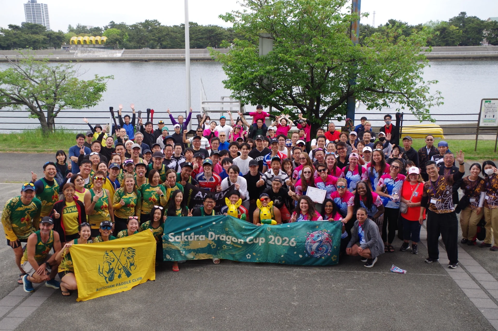
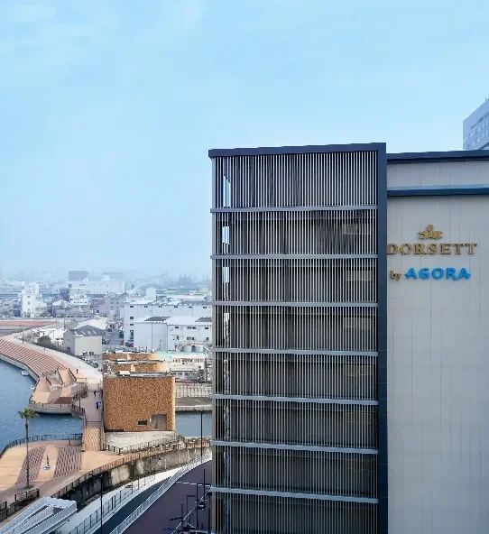
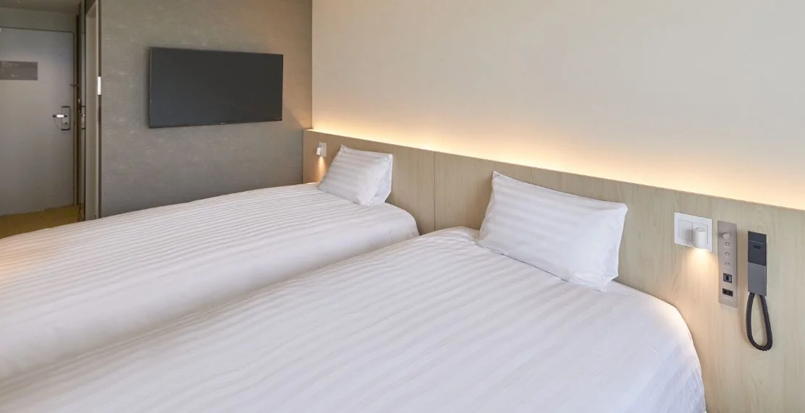

OPEN
オープン太閤天下杯
漕手：年齢・性別制限なし

OSAKA, JAPAN
2027.4.11 SUN
大阪府立漕艇センター
EVENT OVERVIEW
開催日
2027年RACE
500m直線コース
3レース全チーム保証
OPEN
オープン漕手：年齢・性別制限なし
WOMEN
女子漕手：全員女性
年齢制限なし
SENIOR B
シニアB漕手：全員50歳以上
性別制限なし
ENTRY
48,000円
60,000円
VENUE / ACCESS
大会当日は、会場隣接の駐車場は利用できません。参加チームの車両は、第4駐車場をご利用ください。
南海堺駅付近と会場を結ぶシャトルバスは、国内参加者も利用できます。
事前申請いただいた方の座席は確保します。事前申請のない方も、当日空席があれば利用できます。
詳細は2027年3月頃にお伝えします
OFFICIAL HOTEL
関西圏外から参加するチーム向けに、公式ホテルのツインルームを大会特別料金でご用意しています。
2027年1月に詳細案内します


FAQ
全チーム3レースを保証します。競技距離は直線500mです。
2027年4月10日（土）に公式練習を実施します。
舵取りを確保できないチームには、事前相談で主催者が手配します。
パドル・ライフジャケットは貸出をご用意しています。海外チーム向けの数量を確保するため、国内チームの皆さまは、できる限りご自身の用具をご持参ください。
主催者が、チームごとの専用待機テントを用意します。